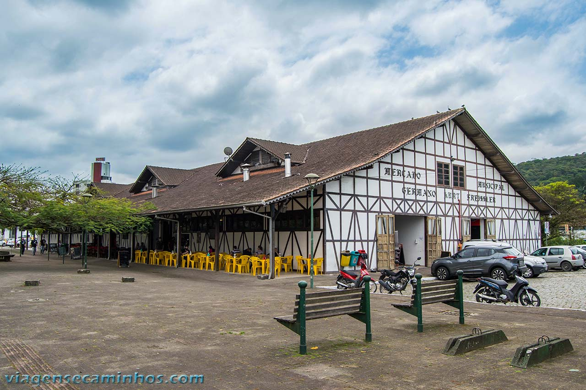
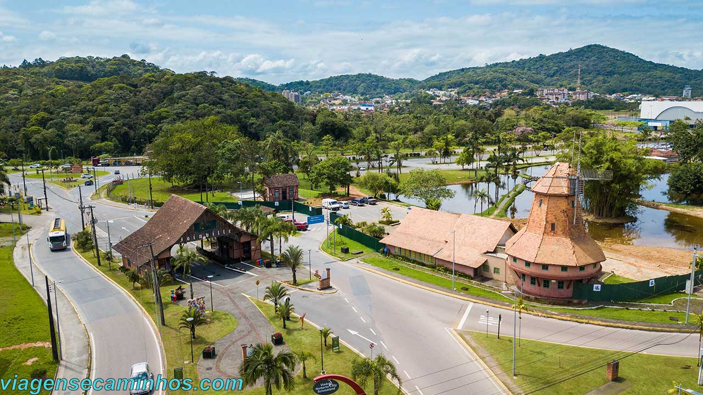

Joinville
Joinville é um município localizado na região norte do estado de Santa Catarina.
Sua população, conforme estimativas do IBGE de 2021, era de 604 708 habitantes,
sendo a maior cidade do estado, à frente da capital Florianópolis, e é a terceira
mais populosa cidade da Região Sul do Brasil atrás apenas de Porto Alegre
e Curitiba (da qual é distante apenas 130 km, sendo assim, mais próxima da capital
paranaense do que a do próprio estado). Possui uma área de 1 127,946 km². Pertence
à Microrregião de Joinville e à Mesorregião do Norte Catarinense e é sede da Região
Metropolitana do Norte/Nordeste Catarinense, a qual contava, no último censo, aproximadamente
1,34 milhão de habitantes, assim sendo, a mais populosa região metropolitana do estado de Santa Catarina.
Portal da Cidade

Site da Prefeitura
Pontos Turísticos
Gastronomia
Inovação tecnológica
No mesmo ritmo em que cresce economicamente, Joinville investe em inovação e se
prepara tecnologicamente para acompanhar o desenvolvimento de setores como indústria e serviços.
Recentemente, Joinville ficou entre as dez cidades brasileiras mais bem preparadas para receber
a tecnologia 5G. O ranking “Cidades Amigas do 5G” foi realizado pela Conexis Brasil Digital,
entidade que representa empresas de telecomunicações e de conectividade, e foi divulgado pelo
Governo Federal.
Para chegar ao ranking, os pesquisadores levaram em conta critérios como autorização para instalação
em até 60 dias, prazo de validade da licença não inferior a dez anos, solicitações que podem ser feitas
em um único órgão na Prefeitura, processos e documentação claramente definidos, além de valores das taxas
de licenciamento razoáveis. Com a sanção da Lei Complementar 600, Joinville está pronta para receber
investimentos em tecnologia 5G.
Pórtico de Joinville

Mercado Público de Joinville
